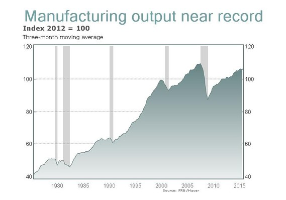
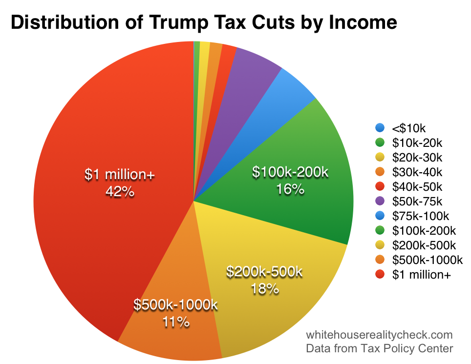

Bringing Back Jobs And Growth
Since the recession of 2008, American workers and businesses have suffered through the slowest economic recovery since World War II. The U.S. lost nearly 300,000 manufacturing jobs during this period, while the share of Americans in the work force plummeted to lows not seen since the 1970s, the national debt doubled, and middle class got smaller. To get the economy back on track, President Trump has outlined a bold plan to create 25 million new American jobs in the next decade and return to 4 percent annual economic growth.
Reality: US unemployment has fallen drastically since the 2008 recession, and is lower than it was from 1974 to 1997.
Reality: US manufacturing output has been increasing drastically.
Reality: The problem is not "Made in America", the problem is "Made by Machines". From FiveThirtyEight: "Whether or not those manufacturing jobs could have been saved, they aren’t coming back, at least not most of them. How do we know? Because in recent years, factories have been coming back, but the jobs haven’t. Because of rising wages in China, the need for shorter supply chains and other factors, a small but growing group of companies are shifting production back to the U.S. But the factories they build here are heavily automated, employing a small fraction of the workers they would have a generation ago."

What is Trump's plan to deal with the lost manufacturing jobs? He gave Carrier a $7m tax break in exchange for them investing $16m in their factory. But that investment will not be used to hire or retain people, it will instead be used to increase automation. Their CEO said, "We're going to make a $16 million investment in that factory in Indianapolis to automate to drive the cost down so that we can continue to be competitive. Now is it as cheap as moving to Mexico with lower cost of labor? No. But we will make that plant competitive just because we'll make the capital investments there. What that ultimately means is there will be fewer jobs."
The plan starts with pro-growth tax reform to help American workers and businesses keep more of their hard-earned dollars. The President’s plan will lower rates for Americans in every tax bracket, simplify the tax code, and reduce the U.S. corporate tax rate, which is one of the highest in the world. Fixing a tax code that is outdated, overly complex, and too onerous will unleash America’s economy, creating millions of new jobs and boosting economic growth.
Reality: From the Tax Policy Center: "Donald Trump has promised huge tax cuts for everyone. TPC’s analysis of his tax plan found that, on average, households throughout the income distribution would see their tax bills go down. But some taxpayers, especially singles, would pay more in taxes than they do today". They also show that of his proposed $511 billion tax cut, 42% of it would go to those making more than $1 million.
Reality: The effective US corporate tax rate is not one of the highest in the world. The "statutory" tax rate is high at 35%, but the amount US companies actually pay is much lower due to corporate tax write-offs and incentives. According to the US Treasury Department: "The U.S. ratio of corporate remittances to GDP, at 2.2 percent, is below the OECD average of 3.4 percent. This ratio decomposes into the U.S. ratio of corporate taxes to corporate operating surplus (13.4 percent) and the ratio of U.S. corporate operating surplus to GDP (16.7 percent), which are both below the OECD averages of 16.1 percent and 21.6 percent, respectively. Thus it appears that, despite its high statutory CIT rate, the United States takes a below-average share of corporate income in taxes (at least, at the corporate level)".
As a lifelong job-creator and businessman, the President also knows how important it is to get Washington out of the way of America’s small businesses, entrepreneurs, and workers. In 2015 alone, federal regulations cost the American economy more than $2 trillion. That is why the President has proposed a moratorium on new federal regulations and is ordering the heads of federal agencies and departments to identify job-killing regulations that should be repealed.
Reality: Trump businesses have declared bankrupcy 6 times, and he personally lost $916 million in 1995.

Reality: That "$2 trillion" cost of regulations was made up by the Competitive Enterprise Institute. The Washington Post found that the report itself admits that the number is "not scientific". They also said, "there is one huge element missing—the benefit side of the analysis. The report concedes that the $1.8 trillion figure purposely does not subtract any potential benefits from regulations. But that’s unbalanced. Every regulations has costs—but also benefits. Look at cars, for example. Seat belts are a regulation, but they also result in fewer deaths, which is presumably a benefit. Higher fuel-economy standards raise the initial cost of a car, but also result in savings on gasoline over time."
With decades of deal-making experience, the President also understands how critical it is to negotiate the best possible trade deals for the United States. By renegotiating existing trade deals, and taking a tough stance on future ones, we will ensure that trade agreements bring good-paying jobs to our shores and support American manufacturing, the backbone of our economy. The President plans to show America’s trading partners that we mean business by ensuring consequences for countries that engage in illegal or unfair trade practices that hurt American workers.
Trump's business dealings are notoriously corrupt. And with his distorted sense of reality, he will have a hard time seeing eye-to-eye with foreign leaders when it comes time to negotiate trade deals.
By standing side-by-side with America’s workers and businesses, the President’s policies will unleash economic growth, create 25 million new jobs, and help Make America Great Again.
America's corporations and wealthiest citizens are already thriving. Instead of doubling down on policies that benefit only them, we need to find ways to bring that economic growth to the rest of Americans.